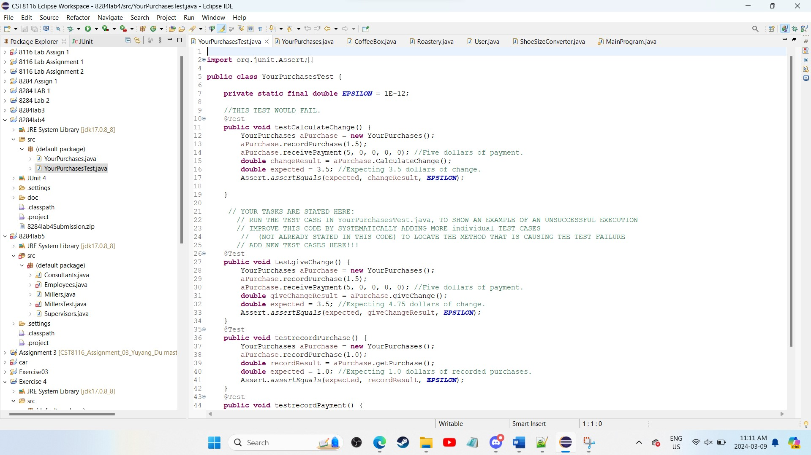

The Roastery
1/4
The Roastery: Completed Nov. 24th, 2023. Successfully utilized while loops, if switches and other
java properties such as private and class variables, objects,
and method calling across classes to create a brewery evaluator
for coffeeshops.
The Shoe Size Converter
2/4
The Converter: Completed Nov. 17th, 2023. Using while loops and if switches, created a program that will convert shoe sizes from American standard to European standadrd.
Registration Form
3/4
The Registration From: Completed Feb. 10th, 2024. Using HTML and CSS styling, I created a registration form with appropriate background coloring, text box locations, and methods for both submission and page resets.
Code Testing
4/4

Code Testing and De-bugging: Completed Feb. 11th, 2024. Using J-Unit testing, successfully located malfunctinoing code and corrected said code and ensured program integrity.
❮
❯